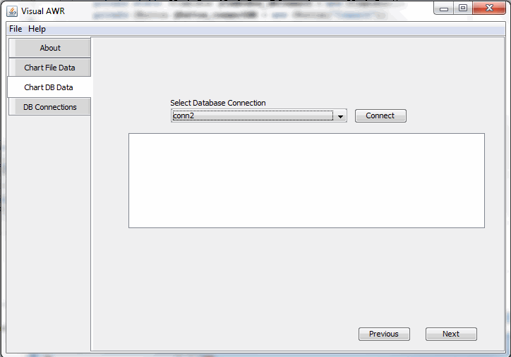
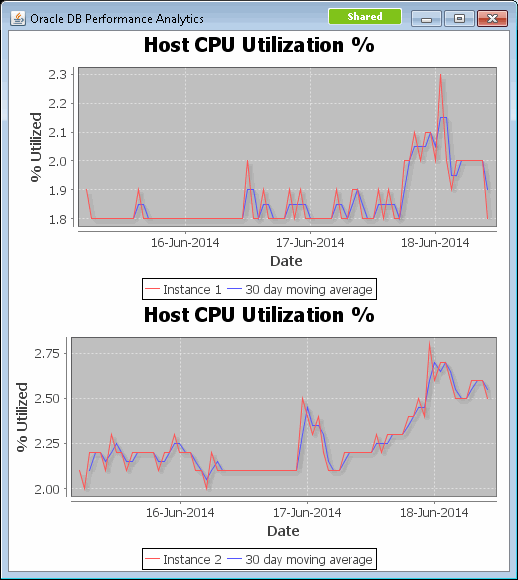

Project Overview: The Visual AWR toolkit provides fine grained graphical trend analysis for Oracle Database AWR (Automatic Workload Repository). AWR metrics are collected automatically by the Oracle database engine. This raw data can be difficult to interpret unless aggregated over multiple days and charted for trend and root cause analysis. VisualAWR is intended for use by experienced DBAs and performance engineers to diagnose workload performance issues and inform platform capacity planning.
Acknowledgement: This project owes a debt to the seminal database performance work done by Tyler Muth from Oracle. Specifically his work with the AWRMiner project which was leveraged as a guide for the SQL queries used to extract data from the Oracle AWR tables.
See my video guide on YouTube and my blog here.
This tool will chart AWR performance metrics by directly attaching to the database or by reading the output file from an AWRMiner collection script. AWR performance metrics can be visualized from one of two data sources: 1.) AWRMiner output file 2.) JDBC Connection .

2b. Use the Chart DB Data wizard to collect the AWR snapshot data and chart the metrics.
2c. Follow the wizard and chart the specific metrics you are interested in.
